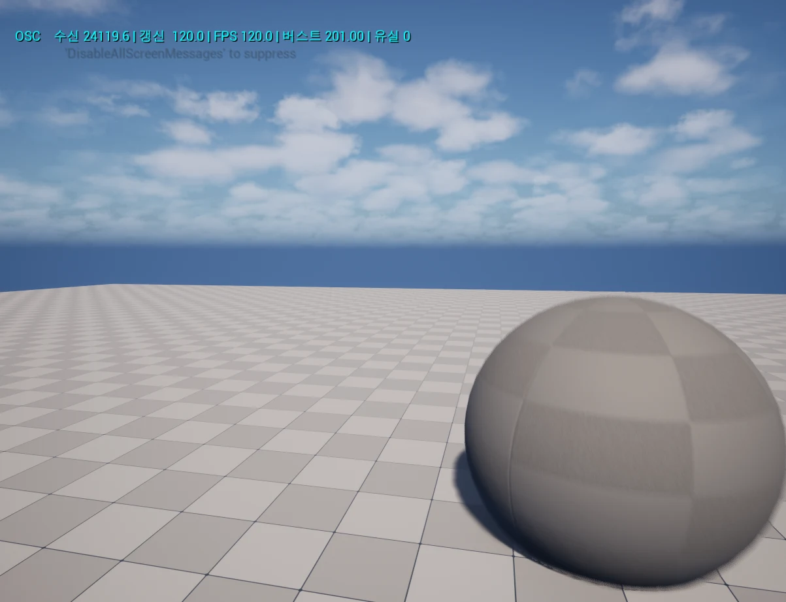
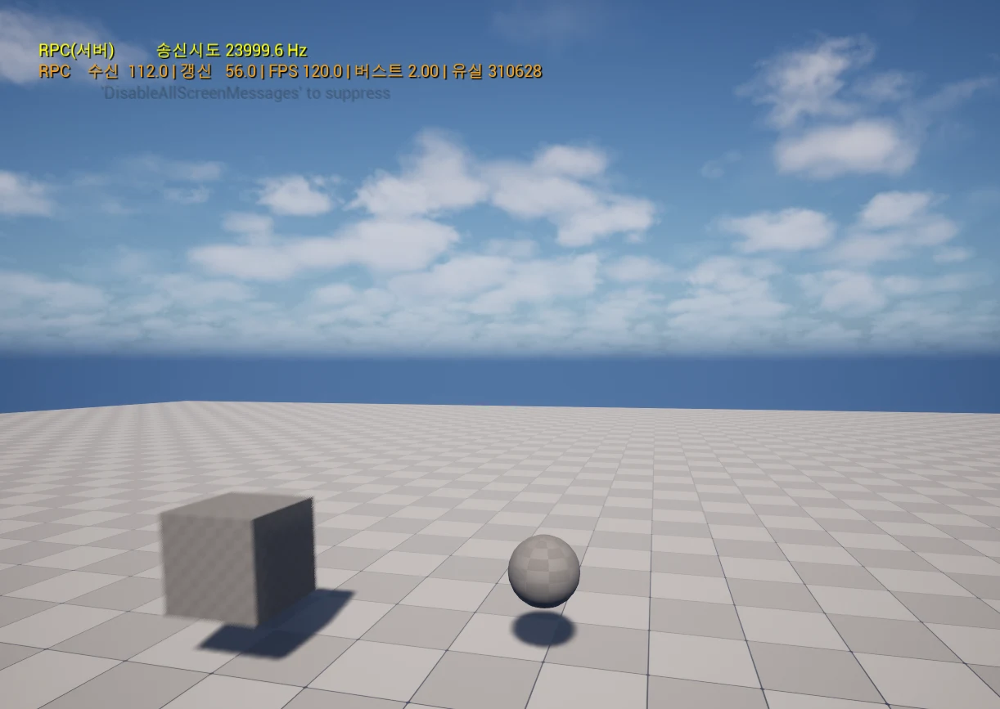

MiniOscReceiver
OSC구조를 다시 만들어 측정한 실험입니다.
- 종류
- 검증용 개인 프로젝트
- 엔진 · 언어
- Unreal Engine 5.6 · C++ · Python
- 규모 · 기간
- 개인 · 2026.07
- 담당
- 전부
왜 만들었나
Stage On에서
모션 데이터를 RPC 대신 UDP/OSC로 받도록 바꾼 판단이 있었습니다.
그런데 그때 소켓·수신 스레드·바이트 파싱은 플러그인이 처리했고,
제가 실제로 확인한 것은 “끊겨 보이던 게 나아졌다”는 증상뿐이었습니다.
그래서 플러그인 없이 그 계층을 만들고, 같은 데이터를 RPC로도 보내는 비교군을 함께 만들어 비교해보았습니다.
// 파이썬이 보낸 x = 1.5 가 실제로 도착하는 모습 0: 2f 63 75 62 |/cub| ┐ 4: 65 2f 70 6f |e/po| ├ 주소 "/cube/pos" 8: 73 00 00 00 |s...| ┘ 9글자+널 → 12바이트(OSC는 4의 배수로 맞춰야함) 12: 2c 66 66 66 |,fff| ┐ 타입 태그 = float 등장 예고 16: 00 00 00 00 |....| ┘ 20: 3f c0 00 00 |?...| → x = 1.5 24: c0 10 00 00 |....| → y = -2.25 28: 42 c8 00 00 |B...| → z = 100.0
수신 바이트 OSC바이트 파싱은 기능2에 구현되어 있습니다.
UDP 소켓과 전용 수신 스레드
네트워크에서 데이터를 1MS마다 꺼내옵니다.
구현
FUdpSocketBuilder로 소켓을 열고 수신 버퍼를 1MB로 잡았습니다.FUdpSocketReceiver가 만든 전용 스레드에서 1ms 간격으로 폴링합니다.- 종료는 스레드를 먼저 멈추고 그다음 소켓을 닫습니다.
소켓은
delete가 아니라 서브시스템에DestroySocket으로 반납합니다.
화면
// 정상 수신 중 — 계측 로그 [OSC][stats] 수신 60.0 Hz / 적용 60.0 Hz / 누적 1800 패킷 / 파싱실패 0 [OSC][stats] 수신 60.0 Hz / 적용 60.0 Hz / 누적 3600 패킷 / 파싱실패 0
계측 로그수신 Hz는 네트워크로 도착한 양, 적용 Hz는 게임 스레드가 실제로 반영한 양입니다. 두 값이 갈라지면 게임 스레드가 밀리고 있다는 뜻이라 지표를 둘로 나눴습니다.
성과
OSC 바이트 파싱
구현
- 4바이트 정렬 —
(n + 3) & ~3./cube/pos는 9글자지만 널 포함 12바이트를 소비합니다.(4의 배수를 맞춰야 하기 때문) - 빅엔디안 조립 — OSC는 네트워크 바이트 오더입니다. 가장 앞 바이트를 최상위로 두고 조립합니다.
- float는 비트 재해석 —
FMemory::Memcpy로 32비트를 그대로 옮깁니다. - 매 읽기마다 경계를 검사하고, 모르는 타입 태그를 만나면 즉시 실패시킵니다.
화면
// 값을 바꾸는 게 아니라 같은 비트를 다시 읽는다 0x3FC00000 (float)AsInt → 1069547520.0 ← 정수를 실수로 '변환' 0x3FC00000 Memcpy 재해석 → 1.5 ← 같은 32비트를 IEEE754로 // 매 읽기마다 경계 검사 — 없으면 잘린 패킷 하나로 버퍼 오버리드 if (InOutOffset + 4 > Size) return false;
비트 재해석같은 값을 (float)캐스팅하면 10억이 나옵니다.
원한 건 같은 32비트를 실수 형식으로 다시 읽는 것이기 때문에 Memcpy로 비트를 그대로 복사하여 IEEE754 규칙으로 읽어 1.5라는 값을 얻었습니다.
성과
스레드 경계 — SPSC 락프리 큐
수신 스레드와 게임 스레드의 역할을 분리했습니다.
구현
- 수신 스레드는 파싱해서 큐에 넣는 일까지만 합니다.
TQueue<FOscMessage, EQueueMode::Spsc>로 게임 스레드에 넘깁니다. - 계측 카운터조차
FPlatformAtomics::InterlockedIncrement로 원자적으로 올립니다.++는 읽고·더하고·쓰는 세 동작이라 중간에 끼어들면 값이 어긋납니다. - 게임 스레드는
Tick에서 큐를 비우고 주소 패턴으로 분기해 위치는Transform에, 페이셜은 로그로 보냅니다.
성과
RPC와 비교 측정
구현
- 같은 궤도 데이터를 RPC로도 보내는 비교군(
RpcMotionActor)을 만들고, 양쪽에 같은 계측 컴포넌트를 붙였습니다. - 동일한 조건에서 전송방식(OSC vs RPC)만 다르게 했습니다.
-SetReplicateMovement(false)로 자동 복제를 막고 (안 막으면 RPC와 무관하게 큐브가 움직입니다)
-HasAuthority()(서버이면)면 계측하지 않았습니다 (서버에서 재면 실행한 함수가 바로 적용되어서 의미가 없음). - 본 개수를 1개 → 100~200개로 올려 실제 모션캡처 수준의 부하를 만들었습니다.
화면
// Reliable RPC — 본 100~200개 부하에서 LogNetSerialization: Error: FBitWriter overflowed! (Max: 1DC4) LogNet: Warning: Closing connection. Can't send function 'MulticastMotionReliable' Reliable buffer overflow. Ch MaxPacket: 1024. LogNet: - Result=RPCReliableBufferOverflow LogNet: UNetConnection::Close // OSC — 같은 조건 OSC 수신 24120 / 실질갱신 3.0 / FPS 3.0 / 평균버스트 8047 OSC 수신 23639 / 실질갱신 55.2 / FPS 55.2 / 평균버스트 434 OSC 수신 24119 / 실질갱신 60.0 / FPS 60.0 / 평균버스트 402
실제 로그Reliable RPC는 느려지는 게 아니라 연결이 끊깁니다. OSC는 전부 수신했지만 초기에 FPS가 3까지 떨어졌습니다.


촬영 조건두 경로를 동시에 돌리면 서로 부하를 주므로 각각 단독으로 재고 송신 조건만 맞췄습니다. OSC 촬영 시 RPC 액터를, RPC 촬영 시 OSC 송신기를 껐습니다.
| 방식 | 초당 요청 | 클라 수신 | 전달률 | 유실 | 결과 |
|---|---|---|---|---|---|
| RPC · Reliable | 24,000 | — | 측정 불가 | — | 연결 종료 |
| RPC · Unreliable | 24,000 | 112 | 0.47% | 310,628 | 연결 유지, 사실상 마비 |
| OSC · UDP | 24,120 | 24,120 | 100% | 0 | 전부 수신 |
초당 요청 수가 다른 이유RPC는 본만 보내 200 × 120Hz = 24,000이고,
OSC 송신기는 프레임마다 페이셜 패킷 /face/blend 하나를 더 보내 (200+1) × 120Hz = 24,120입니다.
OSC 쪽이 120개 더 많은 부하를 받고도 유실이 0이었습니다.
성과
트러블슈팅
어려움
기능 01 — UDP 소켓과 전용 수신 스레드
- 문제
- 게임 스레드에서 소켓을 읽으면 프레임당 한 번(≈16ms)밖에 확인하지 못합니다. 그 사이 도착한 패킷이 커널 버퍼에 쌓이다 넘칩니다.
- 원인
UDP는 재전송이 없습니다. 버퍼가 차면 커널이 조용히 버리고 애플리케이션은 그 사실조차 모릅니다.- 해결
- 수신을 전용 스레드로 분리해 1ms마다 확인하고, 커널 버퍼도 크게 잡았습니다. 1ms면 60~120Hz 스트림을 놓치지 않으면서 CPU 부하도 크지 않습니다.
어려움
기능 02 — OSC 바이트 직접 파싱
- 문제
- 조립한
0x3FC00000을(float)로 캐스팅했더니 약 10억이 나왔습니다. 기대한 값은1.5였습니다. - 원인
- 캐스팅은 값을 변환합니다.
제가 원한 것은 변환이 아니라 같은 32비트를 IEEE754 규칙으로 다시 읽는 것이었습니다.
// 같은 32비트, 처리 방식만 다르게 ① (float)Bits — 값 변환 전 0011 1111 1100 0000 0000 0000 0000 0000 후 0100 1110 0111 1111 0000 0000 0000 0000 → 1069547520.0 비트를 새로 만든다. 양은 보존, 비트는 버림. ② Memcpy(&f, &Bits, 4) — 비트 재해석 전 0011 1111 1100 0000 0000 0000 0000 0000 후 0011 1111 1100 0000 0000 0000 0000 0000 → 1.5 한 비트도 안 바뀐다. 읽는 규칙만 IEEE754로.
- 해결
FMemory::Memcpy로 비트를 그대로 복사했습니다.reinterpret_cast도 가능하지만 strict aliasing 위반 소지가 있어(컴파일러에 따라 깨질 수 있음)Memcpy를 택했습니다.
어려움
기능 03 — 스레드 경계 — SPSC 락프리 큐
- 문제
- 수신 콜백에서 액터를 직접 움직이면 값이 절반만 갱신되거나 크래시가 났습니다.
- 원인
- 언리얼의
UObject는 스레드 세이프하지 않습니다. 게임 스레드가 큐브의 위치를 읽어서 그리는 한복판에 수신 스레드가 값을 덮어 씌워서 그 결과로
- 값이 절반만 갱신됨 (x는 새 값, y는 옛 값)
- GC가 그 순간 그 오브젝트를 정리 중이었다면 → 이미 해제된 메모리를 건드림 → 크래시 - 해결
- 컨베이너 벨트를 생각하며 큐 하나로 생산자(수신 스레드) , 소비자(게임 스레드)를 확정했습니다. 락은 쓰지 않았습니다. 수신 스레드가 락을 기다리며 멈추면 그동안 소켓을 못 읽어 커널 버퍼가 차고, 결국 데이터 유실로 이어지기 때문입니다.
범위와 한계
PIE의 리슨 서버는 클라이언트와 같은 프로세스라 둘 사이의 통신이 물리 네트워크를 타지 않습니다. 그래서 여기서 관찰된 실패는 전부 엔진 내부 한계(Reliable 버퍼 오버플로, 게임 스레드 정체)이고, 실제 네트워크가 주는 왕복 지연·패킷 손실은 빠져 있습니다. 실제 환경이라면 Reliable RPC는 ACK가 늦게 와 더 낮은 부하에서 끊기고, OSC의 “유실 0”도 유지되지 않을 것입니다.
NetServerMaxTickRate 조작이 PIE에서 적용되지 않아 틱레이트의 영향은 검증하지 못했습니다.
본 데이터가 위치(float 3개)뿐이고 실제 모션캡처는 회전까지 보내므로, 부하를 실제보다 가볍게 잡았습니다.